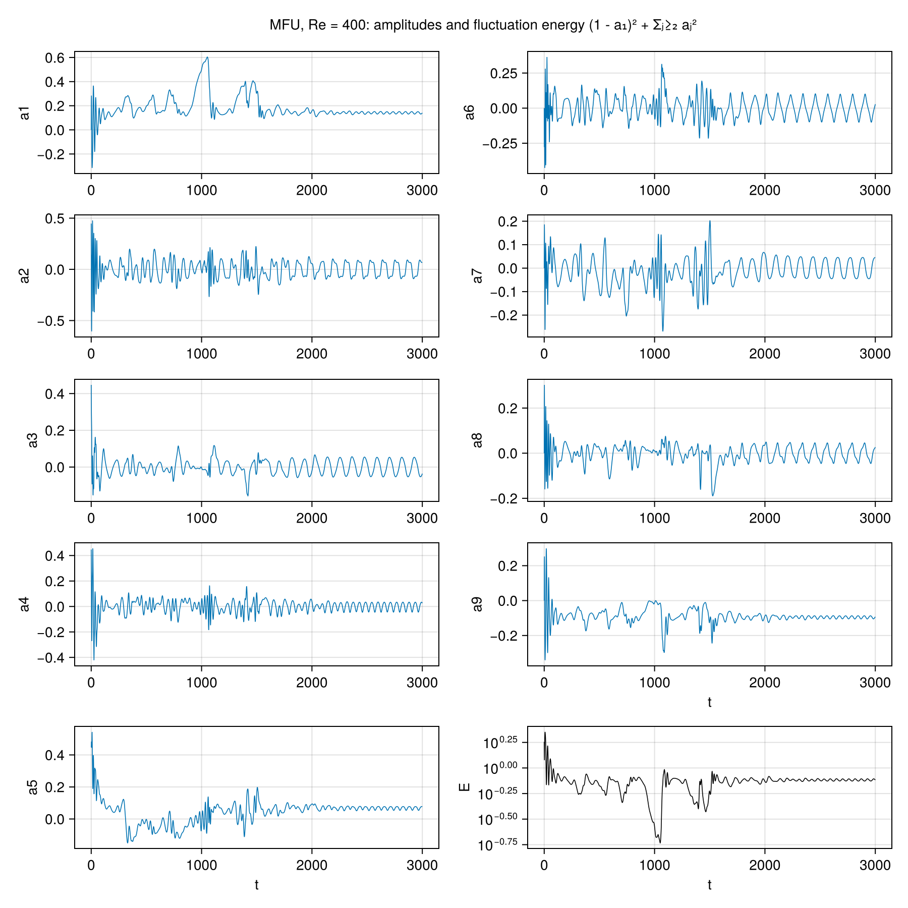
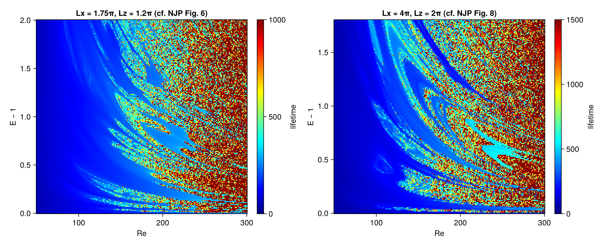
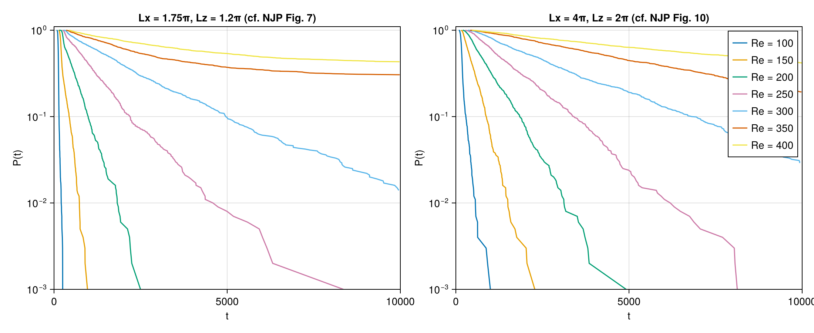

Time series and turbulent lifetimes
This page reproduces, qualitatively, the transient turbulence of NJP 2004 §4–5: chaotic transients that eventually decay to the laminar state, lifetimes with a fractal dependence on initial amplitude and $Re$, and exponential lifetime distributions.
The lifetime maps and survival probabilities take a few minutes (with 4 threads); their results are cached under docs/src/assets/data (set MFE_RECOMPUTE=true to redo them).
using LinearAlgebra, OrdinaryDiffEq, Random, Statistics, CairoMakie
include(joinpath(get(ENV, "MFE_ROOT", joinpath(@__DIR__, "..")), "src", "setup.jl"))savefig (generic function with 1 method)A chaotic transient
Minimal flow unit ($L_x = 1.75\pi$, $L_z = 1.2\pi$) at $Re = 400$, starting from the initial condition of NJP §5, $a_2 = a_3 = a_4 = a_5 = \sqrt{E-1}/2$ and all other amplitudes zero (the paper sets $a_1 = 0$). The individual trajectory of NJP Fig. 3 is not reproducible (its initial condition is not given), but we can show a typical one:
p = MFEParams(; Re = 400.0, MFU_DOMAIN...)
a0 = njp_initial_condition(0.8)
sol = solve(ODEProblem(mfe!, a0, (0.0, 3000.0), p), Tsit5(); saveat = 1.0, abstol = 1e-9, reltol = 1e-9)
fig = Figure(size = (900, 900))
for i in 1:9
local ax = Axis(fig[(i - 1) % 5 + 1, (i - 1) ÷ 5 + 1]; ylabel = "a$(i)", xlabel = i in (5, 9) ? "t" : "")
lines!(ax, sol.t, sol[i, :]; linewidth = 0.8)
end
ax = Axis(fig[5, 2]; ylabel = "E", xlabel = "t", yscale = log10)
lines!(ax, sol.t, max.(fluctuation_energy.(sol.u), 1e-12); color = :black, linewidth = 0.8)
Label(fig[0, :], "MFU, Re = 400: amplitudes and fluctuation energy (1 - a₁)² + Σⱼ≥₂ aⱼ²")
The lifetime of this transient, with our laminarisation criterion (fluctuation energy below $10^{-2}$; the papers do not state theirs):
lifetime(a0, p; tmax = 1e4)10000.0Lifetime maps
Lifetime as a function of $Re$ and of the initial amplitude $E - 1$, with the NJP §5 initial conditions, integrated up to $t = 1000$ for the minimal flow unit (NJP Fig. 6) and $t = 1500$ for $L_x = 4\pi$, $L_z = 2\pi$ (NJP Fig. 8).
function lifetime_map(dom, Res, Em1s, tmax)
L = zeros(length(Em1s), length(Res))
Threads.@threads for j in eachindex(Res)
p = MFEParams(; Re = Res[j], dom...)
for i in eachindex(Em1s)
L[i, j] = lifetime(njp_initial_condition(Em1s[i]), p; tmax)
end
end
return L
end
Res_map = range(50, 300, length = 251)
Em1_mfu = range(0.0, 2.0, length = 201)
Em1_nbc = range(0.0, 1.8, length = 181)
L_mfu = cached(() -> lifetime_map(MFU_DOMAIN, Res_map, Em1_mfu, 1000.0), "lifetime_map_mfu")
L_nbc = cached(() -> lifetime_map(NBC_DOMAIN, Res_map, Em1_nbc, 1500.0), "lifetime_map_nbc")
fig = Figure(size = (1100, 450))
for (k, (L, Em1, title, tmax)) in enumerate(((L_mfu, Em1_mfu, "Lx = 1.75π, Lz = 1.2π (cf. NJP Fig. 6)", 1000),
(L_nbc, Em1_nbc, "Lx = 4π, Lz = 2π (cf. NJP Fig. 8)", 1500)))
local ax = Axis(fig[1, 2k - 1]; xlabel = "Re", ylabel = "E − 1", title)
hm = heatmap!(ax, Res_map, Em1, L'; colormap = :jet, colorrange = (0, tmax))
Colorbar(fig[1, 2k], hm; label = "lifetime")
end
At low $Re$ the lifetime varies smoothly with the initial amplitude; as $Re$ grows, tongues of long lifetimes appear and interleave, giving the fractal-looking structure of the papers.
Survival probabilities
For each $Re$, 1000 initial conditions drawn uniformly on the energy shell $\sum_i a_i^2 = 0.3$ are integrated up to $t = 10^4$ (NJP §5). The fraction $P(t)$ still turbulent at time $t$ is shown on a logarithmic scale.
Res_surv = 100.0:50.0:400.0
function lifetimes_ensemble(dom, Res; n = 1000, tmax = 1e4, seed = 2004)
T = zeros(n, length(Res))
Threads.@threads for j in eachindex(Res)
rng = Xoshiro(seed + j)
p = MFEParams(; Re = Res[j], dom...)
for i in 1:n
T[i, j] = lifetime(random_shell_state(rng, 0.3), p; tmax)
end
end
return T
end
T_mfu = cached(() -> lifetimes_ensemble(MFU_DOMAIN, Res_surv), "lifetimes_mfu")
T_nbc = cached(() -> lifetimes_ensemble(NBC_DOMAIN, Res_surv), "lifetimes_nbc")
# trajectories still turbulent at the final time (censored) only lower P(t)
function survival(τ; tmax = 1e4)
t = sort(τ[τ .< tmax])
return t, 1 .- (1:length(t)) ./ length(τ)
end
fig = Figure(size = (1100, 450))
for (k, (T, title)) in enumerate(((T_mfu, "Lx = 1.75π, Lz = 1.2π (cf. NJP Fig. 7)"),
(T_nbc, "Lx = 4π, Lz = 2π (cf. NJP Fig. 10)")))
local ax = Axis(fig[1, k]; yscale = log10, xlabel = "t", ylabel = "P(t)", title,
limits = (0, 1e4, 1e-3, 1.1))
for (j, Re) in enumerate(Res_surv)
t, P = survival(T[:, j])
keep = P .> 0
lines!(ax, t[keep], P[keep]; label = "Re = $(Int(Re))")
end
k == 2 && axislegend(ax; position = :rt)
end
The distributions are exponential (straight lines) after a short initial transient. In the minimal flow unit, for $Re \gtrsim 350$ a finite fraction of trajectories never decays: they are captured by the stable periodic orbit (and, below $Re \approx 355$, the quasi-periodic and chaotic attractors) discussed in SIADS 2005 and on the bifurcation page. NJP reports deviations from exponential decay for $Re > 320$.
Median lifetimes grow rapidly with $Re$ (NJP Fig. 11):
medians = [(Re = Re, MFU = median(T_mfu[:, j]), NBC = median(T_nbc[:, j]),
MFU_never_decayed = mean(T_mfu[:, j] .== 1e4)) for (j, Re) in enumerate(Res_surv)]7-element Vector{@NamedTuple{Re::Float64, MFU::Float64, NBC::Float64, MFU_never_decayed::Float64}}:
(Re = 100.0, MFU = 124.06451872957729, NBC = 173.72353035755444, MFU_never_decayed = 0.0)
(Re = 150.0, MFU = 213.83321861841537, NBC = 400.7329031312087, MFU_never_decayed = 0.0)
(Re = 200.0, MFU = 413.823886700446, NBC = 729.5081756854224, MFU_never_decayed = 0.0)
(Re = 250.0, MFU = 827.5168420739853, NBC = 1244.489515760767, MFU_never_decayed = 0.0)
(Re = 300.0, MFU = 1565.4182023817316, NBC = 2250.5035912407075, MFU_never_decayed = 0.014)
(Re = 350.0, MFU = 2883.318549454475, NBC = 4480.917554888591, MFU_never_decayed = 0.305)
(Re = 400.0, MFU = 5794.043680309509, NBC = 7972.18418856752, MFU_never_decayed = 0.431)